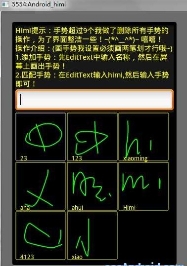
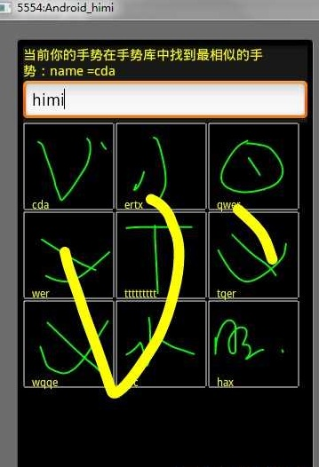

【Android2D游戏开发十七】输入法手势技术,自定义手势玩游戏
有童鞋问我为什么不用SDK2.1 ,2.2来进行游戏开发，那我这里稍微说两句：
1.Android SDK 属于向下兼容！那么低版本可以运行的，高版本基本上更是没问题！（当然每次SDK的更新也会带来新功能，或者修改了一些原来的BUG等等，那么其实对于游戏开发来说，如果你的游戏中不需要更高的SDK版本的支持情况下，完全不必去追求最新的SDK！）
2.使用低版本进行游戏开发这样能兼顾更多的机型，获取更多的用户！
3.大家都知道Android SDK每次版本的更新，底层代码也会更健壮和优化了!比如我们公司的网游Android版在G2（SDK1.5）上跑起来稍微有些卡，而在我的手机上（SDK2.2）运行起来流畅的没说的~各种舒坦~~但是这样也会带来一些弊端，比如我们自己游戏如果上来就用高版本SDK进行开发，那么对于性能、内存上到底如何，我们都不会很容易的看出其效果，如果我们用低版本的SDK则会让我们明显的感受到性能到底如何~你想想如果你的游戏在1.5，1.6上跑起来很流畅，那放在更高版本的SDK机器上更是没说的啦~
总结:游戏开发中，如果你游戏不需要更高的API的支持，那么推荐基于SDK 1.5和1.6来开发！
在上一篇中我给大家介绍了触摸屏手势操作，但是这种触屏手势的操作比较有局限性；比如我们都知道Android可以利用手势来解锁，比如九宫格形式的，通过自定义的一个单笔画手势可以解开屏幕锁，还可以自定义笔画手势来启动一个应用等，那么这种所谓的笔画手势其实就是今天我要给大家讲解的输入法手势识别技术！这种手势是我们可以自己来自定义，而不像之前的触屏手势操作只是利用Android 对一些触屏动作的封装罢了。下面上几张手机自定义笔划手势解锁的的截图：


最后一张图中最后一个是自定义解锁的输入法手势~
OK，那么既然利用手势既然能进行解锁等操作，那么我们游戏开发中，更是可以加入这一亮点了，比如在游戏中我画个圆形执行换背景操作，画个X表示退出游戏等等，等等、哈哈 是不是感觉很有意思了？好的，下面就开始进入讲解！首先本篇主要学习三点： 1. 如何创建输入法手势、删除输入法手势、从SD卡中读取出手势文件！ 2.当输入法手势创建后，如何来匹配出我们的自定义手势！下面我们来熟习两个类和几个概念：
1. 什么是 GestureOverlayView ？ 简单点说其实就是一个手写绘图区；
2. 什么是 GestureLibrary ？这个类是对手势进行保存、删除等操作的，一个存放手势的小仓库！
3. 笔划是什么，字体笔画？是的，其实就是跟我们写字的笔划一个概念！
4.什么是笔划类型？ 输入法手势操作中，笔划类型有两种；一种是：单一笔划，另外一种是：多笔划
所谓单一笔划笔划就是一笔划画出一个手势，从你手指接触屏幕开始到你离开屏幕笔画就会立刻形成一个手势!一气呵成！ 而多笔划则是可以在一定紧凑时间内随意几笔划都可!然后超过这个紧凑时间后便会形成一个手势！先出项目截图，简单说下其功能和操作：


图1界面中分为3块，从上到下依次是：TextView ，EditText，SurfaceView；然后在SurfaceView后面还有一个GestureOverlayView！先看下main.xml:
<?xml version="1.0" encoding="utf-8"?><LinearLayout xmlns:android="http://schemas.android.com/apk/res/android"
android:orientation="vertical" android:layout_width="fill_parent"
android:layout_height="fill_parent">
<TextView android:id="@+id/android_tv" android:layout_width="fill_parent"
android:layout_height="wrap_content" android:text="@string/hello"
android:textSize="15sp" android:textColor="FFFFFF00" />
<EditText android:id="@+id/android_edit" android:layout_width="fill_parent"
android:layout_height="wrap_content" />
<RelativeLayout android:layout_width="fill_parent"
android:layout_height="wrap_content" android:layout_weight="1">
<com.android.MySurfaceView android:id="@+id/view3d"
android:layout_width="fill_parent" android:layout_height="fill_parent" />
<android.gesture.GestureOverlayView
android:id="@+id/android_gesture" android:layout_width="fill_parent"
android:layout_height="fill_parent" android:layout_weight="1.0"/>
</RelativeLayout>
</LinearLayout>
xml中注册的有我们自定义的surfaceview，对此不太熟悉可以去看下【Android2D开发之六】,不多解释了。关于GestureOverlayView这里也只是简单的定义了宽高,还有一些重要的属性设置在代码中设置了，当然xml也可以设置的;下面看MainActivity.java
/*** @author android
* @输入法手势识别
* @注意: android.gesture这个类在api-4(SDK1.6)才开始支持的！
* @提醒：默认存到SD卡中，所以别忘记在AndroidMainfest.xml加上SD卡读写权限！
*/
public class MainActivity extends Activity {
private GestureOverlayView gov;// 创建一个手写绘图区
private Gesture gesture;// 手写实例
private GestureLibrary gestureLib;// 创建一个手势仓库
private TextView tv;
private EditText et;
private String path;// 手势文件路径
private File file;//
@Override
public void onCreate(Bundle savedInstanceState) {
super.onCreate(savedInstanceState);
this.getWindow().setFlags(WindowManager.LayoutParams.FLAG_FULLSCREEN,
WindowManager.LayoutParams.FLAG_FULLSCREEN);
this.requestWindowFeature(Window.FEATURE_NO_TITLE);
setContentView(R.layout.main);
tv = (TextView) findViewById(R.id.android_tv);
et = (EditText) findViewById(R.id.android_edit);
gov = (GestureOverlayView) findViewById(R.id.android_gesture);
gov.setGestureStrokeType(GestureOverlayView.GESTURE_STROKE_TYPE_MULTIPLE);// 设置笔划类型
// GestureOverlayView.GESTURE_STROKE_TYPE_MULTIPLE 设置支持多笔划
// GestureOverlayView.GESTURE_STROKE_TYPE_SINGLE 仅支持单一笔划
path = new File(Environment.getExternalStorageDirectory(), "gestures")
.getAbsolutePath();
// 得到默认路径和文件名/sdcard/gestures
file = new File(path);// 实例gestures的文件对象
gestureLib = GestureLibraries.fromFile(path);// 实例手势仓库
gov.addOnGestureListener(new OnGestureListener() { // 这里是绑定手写绘图区
@Override
// 以下方法是你刚开始画手势的时候触发
public void onGestureStarted(GestureOverlayView overlay,
MotionEvent event) {
tv.setText("请您在紧凑的时间内用两笔划来完成一个手势！西西~");
}
@Override
// 以下方法是当手势完整形成的时候触发
public void onGestureEnded(GestureOverlayView overlay,
MotionEvent event) {
gesture = overlay.getGesture();// 从绘图区取出形成的手势
if (gesture.getStrokesCount() == 2) {// 我判定当用户用了两笔划
// (强调：如果一开始设置手势笔画类型是单一笔画，那你这里始终得到的只是1！)
if (event.getAction() == MotionEvent.ACTION_UP) {// 判定第两笔划离开屏幕
// if(gesture.getLength()==100){}//这里是判定长度达到100像素
if (et.getText().toString().equals("")) {
tv.setText("由于您没有输入手势名称，so~保存失败啦~");
} else {
tv.setText("正在保存手势...");
addGesture(et.getText().toString(), gesture);// 我自己写的添加手势函数
}
}
} else {
tv.setText("请您在紧凑的时间内用两笔划来完成一个手势！西西~");
}
}
@Override
public void onGestureCancelled(GestureOverlayView overlay,
MotionEvent event) {
}
@Override
public void onGesture(GestureOverlayView overlay, MotionEvent event) {
}
});
// ----这里是在程序启动的时候进行遍历所有手势!------
if (!gestureLib.load()) {
tv.setText("android提示：手势超过9个我做了删除所有手势的操作，为了界面整洁一些！
+ " 输入法手势练习~(*^__^*)~ 嘻嘻！\n操作介绍：(画手势我设置必须画两笔划才行哦~)\n1.
+ "添加手势：先EditText中输入名称，然后在屏幕上画出手势！\n2.匹配手势：
+ "在EditText输入\"android\",然后输入手势即可！ ");
} else {
Set<String> set = gestureLib.getGestureEntries();// 取出所有手势
Object ob[] = set.toArray();
loadAllGesture(set, ob);
}
}
}
这个就是MainActivity主要代码了，其中添加手势、匹配手势、遍历手势、将手势转成图片这些我都单独写成了函数，这样让各位童鞋更清晰思路一些。从以上代码中我们看出在创建手势之前，手写绘图区（GestureOverlayView）肯定先被创建出来，然后我们就可以在其区域中进行笔划绘画手势了，当然绘画手势前，我们也需要设置了笔划类型，也就是我一开始给大家介绍的~其后最重要的就是手写绘图区的手势监听器绑定，增加OnGestureListener这个监听器重写了四个函数，这里最重要的就两个函数：onGestureStarted 和onGestureEnded； 手势开始和手势结束的监听函数!尤其是手势结束监听这个函数尤为重要，在其中我设置好几个条件语句，这么几个条件一方面是让大家了解Gesture中一些比较重要常用的方法，另一方面我要提醒各位童鞋：如果你设置笔划类型是多笔划类型的，那么理想状态下，应该是在一段紧凑时间内，不管你使用了几笔划来绘制手势，系统都应该在判定你在一定短暂时间内没有再进行笔划的时候才应该创建手势，并且系统响应此函数； 其实错了，一开始我也这么想，但是发现，不管你设置的笔划类型是单一的还是多笔划当你手指离开屏幕，不管你当前是第几笔，Android都会去响应这个完成函数，我在这里调用手势Gesture类中的getStrokesCount（）函数，这个函数会记录在紧凑时间内你绘制手势的笔划数，那么根据这个函数我们就可以解决手指离开屏幕总被响应的问题了，因为单一笔划类型永远这个值不会大于1！而 if (event.getAction() == MotionEvent.ACTION_UP) ｛｝写这个只是给大家演示第二个参数按键动作该怎么用；那么我们下面就来看如何创建一个手势：
public void addMyGesture(String name, Gesture gesture) { try {
if (name.equals("android")) {
findGesture(gesture);
} else {
// 关于两种方式创建模拟器的SDcard在【Android2D游戏开发之十】有详解
if (Environment.getExternalStorageState() != null) {// 这个方法在试探终端是否有sdcard!
if (!file.exists()) {// 判定是否已经存在手势文件
// 不存在文件的时候我们去直接把我们的手势文件存入
gestureLib.addGesture(name, gesture);
if (gestureLib.save()) {// //保存到文件中
gov.clear(true);// 清除笔画
// 注意保存的路径默认是/sdcard/gesture
// ,so~别忘记AndroidMainfest.xml加上读写权限！
// 这里抱怨一下，咳咳、其实昨天就应该出这篇博文的，就是因为这里总是异常,今天仔细看了
// 才发现不是没写权限,而是我虽然在AndroidMainfest.xml中写了权限，但是写错了位置..哭死！
tv.setText("保存手势成功！因为不存在手势文件，" + "所以第一次保存手势成功会默认先创
+ "建了一个手势文件！然后将手势保存到文件中.");
et.setText("");
gestureToImage(gesture);
} else {
tv.setText("保存手势失败！");
}
} else {// 当存在此文件的时候我们需要先删除此手势然后把新的手势放上
// 读取已经存在的文件,得到文件中的所有手势
if (!gestureLib.load()) {// 如果读取失败
tv.setText("手势文件读取失败！");
} else {// 读取成功
Set<String> set = gestureLib.getGestureEntries();// 取出所有手势
Object ob[] = set.toArray();
boolean isHavedGesture = false;
for (int i = 0; i < ob.length; i++) {// 这里是遍历所有手势的name
if (((String) ob[i]).equals(name)) {// 和我们新添的手势name做对比
isHavedGesture = true;
}
}
if (isHavedGesture) {// 如果此变量为true说明有相同name的手势
// ----备注1-------------------//gestureLib.removeGesture(name,
// gesture);//删除与当前名字相同的手势
/*----备注2-----------------*/
gestureLib.removeEntry(name);
gestureLib.addGesture(name, gesture);
} else {
gestureLib.addGesture(name, gesture);
}
if (gestureLib.save()) {
gov.clear(true);// 清除笔画
gestureToImage(gesture);
tv.setText("保存手势成功！当前所有手势一共有：" + ob.length
+ "个");
et.setText("");
} else {
tv.setText("保存手势失败！");
}
// //------- --以下代码是当手势超过9个就全部清空 操作--------
if (ob.length > 9) {
for (int i = 0; i < ob.length; i++) {// 这里是遍历删除手势
gestureLib.removeEntry((String) ob[i]);
}
gestureLib.save();
if (MySurfaceView.vec_bmp != null) {
MySurfaceView.vec_bmp.removeAllElements();// 删除放置手势图的容器
}
tv.setText("手势超过9个，已全部清空!");
et.setText("");
}
ob = null;
set = null;
}
}
} else {
tv.setText("当前模拟器没有SD卡 - -。");
}
}
} catch (Exception e) {
tv.setText("操作异常！");
}
}